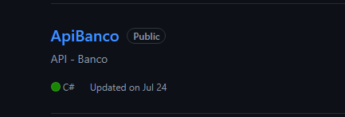

Meu portfólio contém pequenos projetos que utilizo para praticar e expandir meu conhecimento. Comecei meus estudos imerso nos conteúdos de Backend e agora estou estudando Frontend, com o objetivo de criar soluções completas.

Neste exemplo, desenvolvi uma API de Banco que inclui funcionalidades como transferências, depósitos, criação de usuário e criação de conta. Procurei estruturar o código de forma organizada, visando facilidade de manutenção.
Desenvolvi uma API de Lista de Tarefas, onde é possível criar usuários e atribuir tarefas a eles. Utilizei Enums para verificar se a tarefa foi concluída ou está em andamento.

Neste exemplo, dando continuidade às práticas de desenvolvimento, desenvolvi uma API de Livros e Autores, onde cada livro é associado aos seus respectivos autores. Meu foco foi criar um código bem estruturado e de fácil manutenção.
Desenvolvi um site que direciona os usuários para as melhores instituições que buscam erradicar a pobreza em Curitiba-PR, utilizando HTML, CSS e JavaScript. Este foi o meu primeiro site, e estou focado em melhorar tanto a estrutura do código quanto o desenvolvimento de layouts mais aprimorados.
Desenvolvi este site enquanto acompanhava os cursos da Alura. Inicialmente, procurei desenvolver sozinho, usando o conhecimento que já tinha, e depois ajustei o projeto conforme as melhores práticas e estruturas de código mostradas no curso. Este portfólio simples tem servido como inspiração para o portfólio que você está conhecendo agora.
Neste exemplo simples, estou aprendendo a utilizar JavaScript e decidi criar uma calculadora de quantidades. O objetivo é inserir valores e obter o resultado de quantas peças podem ser produzidas com uma certa quantidade de material. Os últimos resultados são registrados em um bloco vermelho. Pretendo estilizar e melhorar este projeto para torná-lo mais funcional e visualmente atraente.